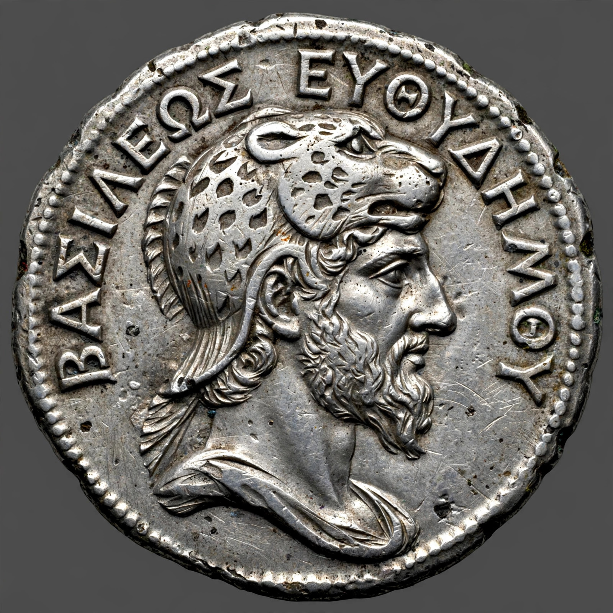

| Seleucus I Nicator | |
|---|---|
| Reign | 305 – 281 BC (Seleucid Empire) |
| Born | c. 358 BC, Europos, Macedon |
| Died | September 281 BC, near Lysimachia, Thrace |
| Successor | Antiochus I Soter |
| Spouses | Apama; Stratonice |
Seleucus I Nicator (c. 358 – September 281 BC; Greek: Σέλευκος Νικάτωρ, "Seleucus the Victor") was a Macedonian general of Alexander the Great and founder of the Seleucid Empire. After Alexander's death in 323 BC, Seleucus fought in the Wars of the Diadochi, initially as satrap of Babylon, and by 305 BC had carved out the largest of the successor kingdoms, stretching at its height from Anatolia and Syria through Mesopotamia and Persia to the borders of India.
Seleucus accompanied Alexander's expedition to Asia, commanding the elite infantry hypaspists and fighting at the Hydaspes in India. In the settlement of Babylon he received the satrapy of Babylonia. Expelled by Antigonus in 315 BC, he returned with a small force in 312 BC — the epoch from which the Seleucid era was reckoned — and recovered Babylon. Campaigning east, he reasserted control over Persia, Bactria, and the upper satrapies, then confronted Chandragupta Maurya in India; the resulting treaty (c. 303 BC) ceded the easternmost provinces in exchange for 500 war elephants.
Those elephants proved decisive at the Battle of Ipsus (301 BC), where Seleucus and Lysimachus destroyed Antigonus. Seleucus founded a string of cities, including Antioch (named for his father) and Seleucia on the Tigris, and married his Persian wife Apama's influence gave the dynasty deep roots in the Iranian east. In 281 BC he defeated Lysimachus at Corupedium and crossed into Europe to claim Macedon, but was assassinated near Lysimachia by Ptolemy Ceraunus, a disgruntled exile at his court. His son Antiochus I succeeded him.
The empire Seleucus founded lasted until the Roman annexation of Syria in 64 BC, and the Seleucid era calendar he inaugurated remained in use in parts of the Near East for over a thousand years.